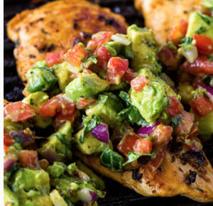

Grilled Chicken with Avacodo Salsa
- Prep Time 10 minuets
- Cook Time 15 minuets
- otal time 25 minuets
- Servings 4 people
- Calories 468kal
Ingredients for the marinade
- 1 1/2 pounds skinless chicken breasts
- 2 garlic cloves
- 3 tablespoons olive oil
- 1/4 cup cilantro chopped
- 1/2 tsp cumin
- 1/2 tsp paprika
- 1/2 tsp salt or to taste
- 1/4 tsp black pepper
Ingredients for the Avacado Salsa
- 2 avacodos diced
- 2 small or 1 large tomato chopped
- 1 jalpapeno de-seeded and chopped (optionalL
- 1/4 cup cilantro finely chopped
- Juice of 1 lime
- fresh cracked pepper and salt to taste
Instructions
- In a large bowl, whisk all the ingredients for the marinade and set aside.
- Pound the breasts to even thickness or slice in half horzontally to get evenly
sized breasts and add to the bowl of marinade. Mix through until the chicken is fully
coated in the marinade. Use right away if needed or marinate for 30 minutes or up to
12 hours.
- Grill chicken over medium-high heat or in a large heavy duty skillet on the
stovetop for 5-6 minuets per side or until the inside is cooked through and the
outside is charred. Top with fresh aavocado salsa and serve immediately.
- Make the Avocado Salsa while the chicken is grilled, combine all the
for the salsa in a small bowl. Cover with plastic wrap in the fridge until
ready to use.
contact
University of Montana 32 Campus Drive Missoula, MT 59812